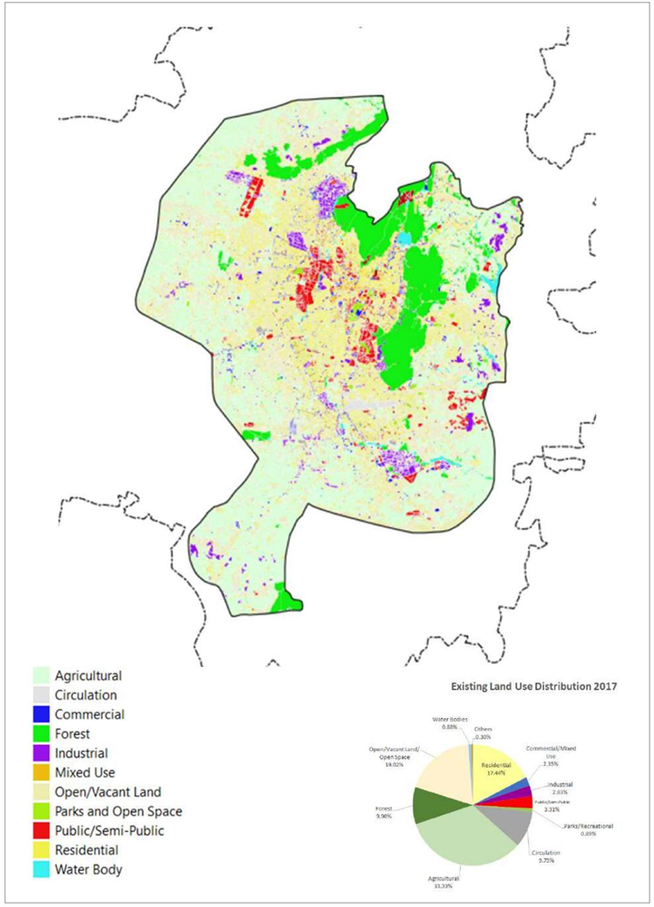
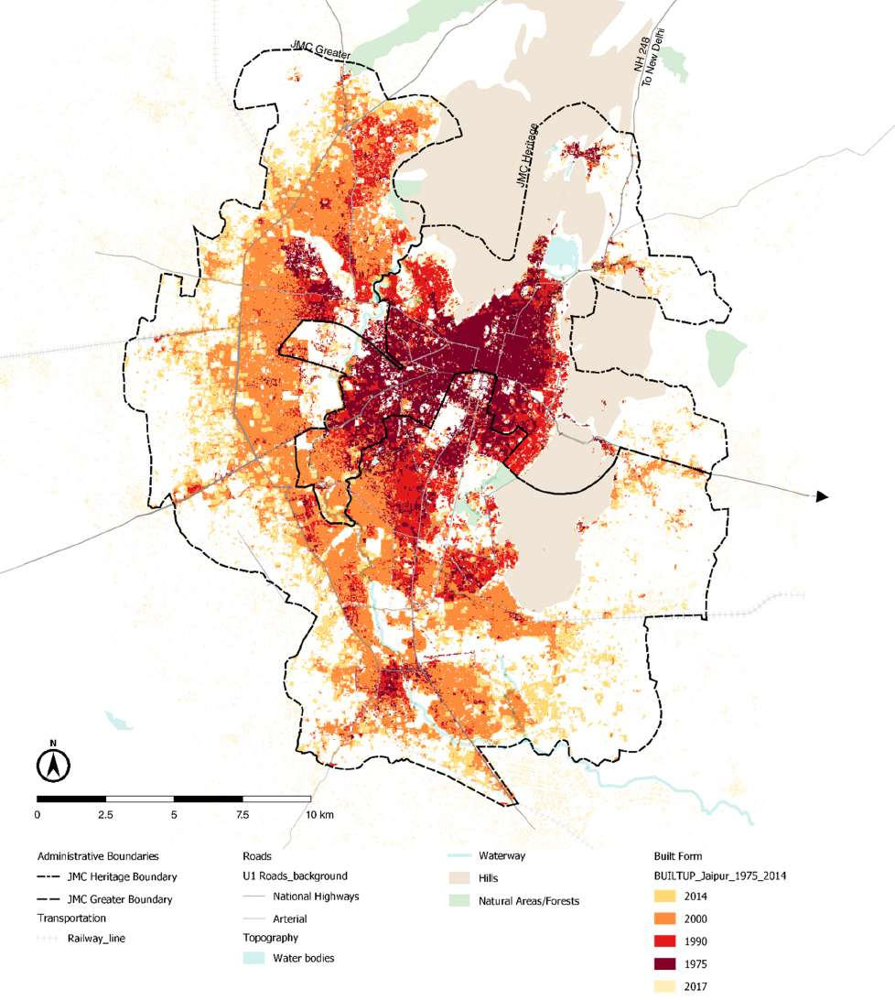

Chapter 2 Literature Review
Jaipur’s participation in India’s Smart Cities Mission reflects its ambition to use data-driven approaches for urban governance, but this goal is hindered by scarce, outdated, and low-granularity spatial data—a challenge common across the Global South that constrains evidence-based digital planning, particularly for understanding population distribution and economic vitality. To address these gaps, researchers increasingly turn to remote sensing and open data as alternative evidence sources, while digital urban planning platforms provide a complementary means to integrate and apply such information. However, the effectiveness of these platforms depends heavily on the quality of the underlying data. This chapter reviews literature on digital platforms in the smart city context (Section 2.1), the nature and impacts of urban data scarcity (Section 2.2), Jaipur’s specific urban and policy setting (Section 2.3), and alternative datasets and modelling approaches for estimating urban activities (Sections 2.4–2.5), with Section 2.6 summarising these findings to justify the methodological choices adopted in this study.
2.1 Digital Urban Planning Platforms in the Era of Smart Cities
Digital urban planning platforms are central tools in the smart city framework, where Information and Communication Technologies (ICT) are used to improve city management and public services (Przybysz et al. 2024). These platforms are not merely digital maps, but integrated systems that combine several key functions. First, they integrate data from multiple sources and formats, including geospatial datasets, statistical records, and real-time sensor feeds (Anttiroiko 2021). Second, they provide analysis and visualisation capabilities, such as spatial modelling, pattern recognition, and interactive dashboards, which transform complex data into clear and actionable insights (Repette et al. 2021). Third, they offer collaborative and decision-support features, providing planners, policymakers, and citizens with a shared workspace to test scenarios, assess impacts, and co-develop solutions (Anttiroiko 2021). In this way, digital planning platforms convert raw data into usable knowledge that can reshape traditional planning workflows.
In addition to their technical functions, these platforms are changing urban governance and public participation practices. The rise of open government data has made them important channels for publishing and using spatial information, thereby increasing transparency in planning processes (Parasa 2021). They also enable new forms of citizen engagement, such as Participatory Geographic Information System (PGIS), Volunteered Geographic Information (VGI), and online co-creation platforms, which allow residents to contribute local knowledge and feedback more easily (Ddamba and Dittrich 2015; Hasler, Chenal, and Soutter 2017). In India, recent policies have emphasised the value of open geospatial data, encouraging its integration into master plans and other urban development initiatives (Parasa 2021). These developments show that digital planning platforms can help make urban governance more inclusive, collaborative, and responsive to local needs.
One of the most common ways to deliver such platforms is through interactive web applications. Web-based GIS platforms allow users to explore and analyse spatial data directly in a browser, removing the need for specialised desktop software and lowering barriers for participation (Gebetsroither-Geringer, Stollnberger, and Peters-Anders 2018). Cloud-based geospatial platforms such as Google Earth Engine (GEE) further expand these possibilities by combining access to petabyte-scale satellite data with high-performance processing tools (Stamou et al. 2025). GEE applications have been applied in a wide range of urban studies, including mapping urban extent and estimating urban growth (L. Wang et al. 2021), assessing accessibility and characterising urban ecosystems (Carvalho et al. 2018), and monitoring urban heat island intensity using MODIS and Landsat data to support sustainable development strategies (Galodha and Gupta 2021). By embedding such analyses into shareable web maps and dashboards, researchers can make up-to-date spatial insights accessible to policymakers and the public. This demonstrates a practical pathway for implementing digital urban planning platforms and connects directly to the methods used later in this study.
Yet the practical value of these platforms ultimately rests on the evidence they can mobilise. In many Global South cities, including Jaipur, the binding constraint is not the platform itself but the availability, granularity, and openness of the underlying data. The next section (2.2) examines this constraint.
2.2 Urban Data Scarcity: Challenges from the Global South
In many cities across the Global South, key urban datasets required for effective planning are scarce or inaccessible. Here, urban data scarcity refers to gaps in availability, spatial resolution, timeliness, and interoperability that hinder neighbourhood-scale analysis and cross-sector integration. First, high-granularity population and economic activity data are often lacking: census datasets are typically decennial and aggregated to large spatial units (e.g., wards), which makes them unsuitable for neighbourhood-level analysis (Georganos et al. 2022; Satterthwaite 2010). Second, dynamic behavioural data are costly and challenging to collect through conventional surveys (e.g., origin–destination flows, daily mobility patterns, and consumption behaviours). Third, the informal sector—both in employment and in housing—is often invisible in official statistics despite its significant role in urban economies (Brahmbhatt et al. 2019). Finally, institutional “data silos” mean that even when datasets exist, they are stored in separate departmental systems without effective sharing mechanisms (Gosling-Goldsmith et al. 2025). This separation restricts the integration needed for digital planning platforms to represent the full picture of the city, including residents’ movements, interactions, and economic behaviours.
The impacts of such data scarcity are wide-ranging. Without reliable datasets, evidence-based decision-making is weakened, and planning often relies more on intuition or political negotiation than on rigorous analysis (Dühr, Gilbert, and Peters 2021). In land-use and transport planning, this can lead to resource misallocation, such as poorly located infrastructure, underused public facilities or transport routes that do not match actual demand (Shehu and Lezzerini 2024). In public service provision, a lack of granular demographic and socioeconomic data can cause uneven access to education, healthcare and basic utilities, which deepens existing inequalities (Srivastava 2017). Public participation is also undermined because, without credible and shared datasets, consultations often turn into unproductive debates driven more by perceptions than by evidence (Delphin et al. 2022). These issues have been observed in contexts where incomplete datasets have contributed to inefficient infrastructure projects and missed opportunities to integrate blue–green infrastructure into urban plans (Adeloye 2015; Sörensen, Persson, and Olsson 2021). In practice, the absence of robust and up-to-date evidence chains compromises the ability to design, implement and monitor the interventions that smart city platforms are meant to enable.
These technical and organisational barriers, which lead to data scarcity, often stem from deeper governance and institutional issues. In many contexts, data are treated as strategic assets rather than public goods, and agencies are reluctant to share information across departmental boundaries (Yu 2024). The lack of clear data standards, privacy regulations and accountability mechanisms further reinforces data fragmentation (Kvalvik, Sánchez-Gordón, and Colomo-Palacios 2022). Experiences from smart city initiatives in the Global South show that technological tools cannot succeed without governance systems that encourage transparency, collaboration and citizen engagement (Meijer and Bolívar 2016; Sengupta and Sengupta 2022). Research on data justice also indicates that new digital datasets can unintentionally increase inequalities if the benefits mainly flow to already advantaged groups (Heeks and Shekhar 2019; Brahmbhatt et al. 2019). These structural barriers, which involve political, social and institutional factors, are as evident in India as in other developing countries. In Jaipur, the combination of limited high-granularity datasets and top-down governance creates specific constraints for digital planning (Section 2.3).
2.3 Urban Development and Digital Policy in India and Jaipur
2.3.1 National Context: India’s Urbanisation and Digital Agenda
India is urbanising at an unprecedented pace. In 2011, the national urban population was around 377 million, and it is projected to exceed 600 million by 2036 (“Gearing up for India’s Rapid Urban Transformation” 2024). This rapid growth puts intense pressure on infrastructure, public services, and governance systems. Indian cities face long-standing governance issues, such as overlapping responsibilities among agencies, limited fiscal autonomy, and slow implementation of master plans (Ghosh and Kansal 2014; Singh 2013). To respond, the central government has launched major programmes that link urban development with digital transformation. The Smart Cities Mission (SCM), initiated in 2015, aims to improve quality of life through technology-driven solutions, competitive funding, and area-based development (The Ministry of Housing and Urban Affairs (MoHUA) 2015). The Digital India initiative launched in 2015 works in parallel to expand broadband connectivity, promote e-governance, and improve public access to information (Ministry of Electronics & IT 2015). Together, these programmes create a strong top-down push for Indian cities, including Jaipur, to adopt data-driven planning and management systems.
2.3.2 City Context: Jaipur’s Urban Structure and Spatial Heterogeneity
Jaipur is the capital of Rajasthan and a major economic, administrative, and cultural hub in north-west India. Its economy combines tourism, manufacturing, handicrafts, and service industries, yet the growing presence of marginal workers and casual labourers underscores the informal sector’s increasing importance. The city’s spatial form reflects a mix of planned and organic growth. The historic walled city, founded in 1727 according to Vastu Shastra principles, has a compact grid layout and heritage architecture (Md. F. Jawaid, Pipralia, and Kumar 2014). Post-independence expansion led to suburban growth, particularly to the south and west, often in planned layouts (Figure 2.1). More recently, growth has concentrated along transport corridors and in peripheral clusters, sometimes developed without comprehensive planning (M. F. Jawaid et al. 2017). Administratively, the city is divided into Jaipur Municipal Corporation (JMC) Heritage and JMC Greater, which reinforces spatial and governance heterogeneity. Between 1991 and 2021, the built-up area expanded by over 150%, while vegetation and vacant land declined sharply (Figure 2.2). This uneven growth has created contrasts between dense central wards and sprawling, less-serviced peripheries, leading to differences in infrastructure access, green space provision, and service delivery (Un-Habitat 2021)

Figure 2.1: Existing Land Use Map of Jaipur Urbanizable Area 2017. Source: Jaipur Master Development Plan 2025.

Figure 2.2: Multi-temporal Classification of JMC Built-up Presence. Source: UN-Habitat.
2.3.3 Local Reality: Digital Initiatives and Data Limitations
Under the Smart Cities Mission, Jaipur Smart City Limited (JSCL) has implemented both area-based and pan-city projects. In the walled city, projects focus on heritage revitalisation and improved pedestrian and cycling infrastructure. City-wide initiatives include a public bicycle sharing system, environmental monitoring sensors, solid waste management improvements, and the development of a central command-and-control centre for transport and traffic management (Limited 2025). These efforts signal an ambition to embed digital tools into urban management. However, the underlying data infrastructure remains weak. There is no dedicated local open data portal; most publicly available datasets are accessible via the national Open Government Data (OGD) Platform or the Census of India. Most of these datasets are annual, non-spatial, and aggregated at coarse administrative levels, such as wards. The latest ward-level census data dates back to 2011, making it difficult to capture the city’s recent rapid changes. This mismatch between digital ambitions and the availability of high-granularity, up-to-date urban datasets limits the potential of smart city initiatives. Faced with these constraints, alternative evidence sources—such as remote sensing imagery and other open spatial datasets—offer a practical way to fill information gaps and support more responsive, locally tailored planning (Section 2.4).
2.4 Remote Sensing and Open Data for Digital Planning
In Jaipur, where official datasets are scarce, remote sensing (RS) offers a consistent way to examine the city’s form and land use. Nighttime lights (NTL) data, such as from VIIRS, is widely used as a proxy for economic activity, electrification, and urban growth (X. Li et al. 2020; Levin et al. 2020). It provides global coverage and regular updates but has coarse resolution and a blooming effect that can exaggerate urban areas (Xiao et al. 2014). Building footprints from high-resolution imagery or open datasets like Microsoft Building Footprints can indicate settlement density and potential population distribution (Ps and Aithal 2023; Leyk et al. 2018). Where available, building height or volume estimates add a stronger link to habitable and economic space (Biljecki et al. 2016). Multispectral imagery from Landsat or Sentinel satellites enables Land Use and Land Cover (LULC) classification and indices such as NDVI, which can separate vegetated from built-up surfaces. These products give scalable and objective proxies for where human activity may occur, even if they do not measure it directly.
Open data complements RS by adding information on urban functions and networks. OpenStreetMap (OSM), a crowd-sourced map, provides building outlines, road networks and land use polygons that are useful for accessibility and connectivity studies (Barrington-Leigh and Millard-Ball 2017; Jokar Arsanjani et al. 2015). Points of Interest (POI) from OSM or other open sources show the locations and types of services, businesses and facilities. The density and type of POI can indicate economic activity and help describe the character of neighbourhoods (Arribas-Bel 2014). Broader Volunteered Geographic Information (VGI) and open government datasets improve transparency and allow analysis to be replicated. In Jaipur, these sources can help fill gaps in official data and add contextual information that imagery alone cannot capture.
Combining RS and open data can improve urban analysis. For example, RS can identify built-up areas, and POI data can help assign their function (A. Lin et al. 2021). This approach can estimate population distribution and economic potential in places with incomplete or outdated official statistics. However, there are limits. NTL data may be noisy; RS and open data often have different resolutions and update times. Volunteered data may be biased toward wealthier areas (Cheng et al. 2018; Al-Bakri 2015). Informal activities, which are essential in Jaipur, are often missing. Most importantly, these datasets only provide proxies: lights do not equal productivity and building footprints do not equal residents. Even so, they are valuable for detectinging urban activities in a scarce-data context. Our study builds on their strengths while working within their limitations, as discussed in Section 2.5.
2.5 Existing Methods for Estimating Urban Activities
Building on the potential and limitations of proxy datasets discussed above, this section reviews two modelling approaches central to this study’s design for estimating urban activities in Jaipur. The first focuses on population disaggregation, which downscales aggregated census data to map residential distribution. The second addresses economic vitality modelling, which synthesises multiple proxies to construct a composite measure of economic activity.
2.5.1 Population Disaggregation
Accurately locating where people live is a critical first step in estimating urban activities, particularly in data-scarce contexts like Jaipur where detailed population grids are unavailable. Population disaggregation has advanced from uniform allocation to spatial modelling, aiming to construct a population distribution weighting layer that enables aggregated census data to be downscaled into high-resolution units (Sapena et al. 2022). Early methods, such as areal weighting assumed uniform distribution within administrative boundaries, overlooking urban heterogeneity. Dasymetric mapping improved accuracy by removing non-residential areas using auxiliary data such as land use or building footprints (Pajares et al. 2021). However, fixed-assumption weighting, for example, assigning the same density to all residential zones, limited its ability to capture variation within built-up areas. Accuracy depends strongly on the quality and classification precision of the auxiliary datasets.
Statistical models such as ordinary least squares (OLS) estimate population density from geographic variables (Bagan and Yamagata 2015). They are data-driven but assume spatial stationarity, often leading to residual spatial autocorrelation. To address spatial non-stationarity, geographically weighted regression (GWR) and multiscale GWR (MGWR) allow variable effects to vary across space and scale (Lei et al. 2024). Machine learning methods, notably random forests (RF), handle complex non-linear relationships in population mapping (Stevens et al. 2015; K. Li, Chen, and Li 2018). The geographical random forest (GRF) localises RF to reduce spatial autocorrelation while maintaining accuracy (Georganos et al. 2022). Neural networks, particularly convolutional neural networks (Gervasoni et al. 2018), can directly learn spatial hierarchies and contextual patterns from raw remote sensing imagery, bypassing the need for manually engineered predictors. This ability to capture texture, shape, and neighbourhood relationships makes them effective for identifying fine-scale variations in settlement patterns. However, they require large, high-quality training datasets.
In data-scarce contexts, an effective strategy is to combine dasymetric mapping with statistical or machine learning models, using the dasymetric component to constrain the likely residential areas and the modelling component to estimate population within them (Pajares et al. 2021; Sapena et al. 2022). Integrating auxiliary datasets such as nighttime lights, points of interest, and building height can further enhance accuracy. This hybrid approach balances interpretability, adaptability, and predictivity.
2.5.2 Modelling Economic Vitality
Beyond residential distribution, estimating urban activities also necessitates understanding the spatial variation in economic activity. Economic vitality modelling has evolved from using single proxies to adopting multi-indicator synthesis, aiming to capture the multi-dimensional nature of urban economies. Nighttime lights (NTL) have been widely used to measure economic vitality, with intensity changes reflecting both overall activity levels and responses to external shocks such as natural disasters or lockdowns (“Measuring Quarterly Economic Growth from Outer Space” 2022; Henderson, Storeygard, and Weil 2012). Studies in Taiwan further link NTL intensity with commercial electricity consumption in business and industrial zones, showing its potential to capture sectoral patterns of vitality (Chang, Tang, and Chan 2025). Points of interest (POI) density has also been used, with higher abundance and diversity associated with greater community vitality (J. Lin et al. 2022). However, NTL cannot easily distinguish between industrial sectors, and POI density may not capture actual economic engagement, potentially misclassifying low-traffic areas as active.
To address these limitations, multi-indicator synthesis combines datasets such as NTL, POI, mobility flows, and transaction records to build composite vitality indices. Principal component analysis (PCA) is the most common approach, transforming correlated variables into independent components and reducing multicollinearity. In Shanghai, a vitality index was built from UnionPay transactions, mobile signalling and POI indicators using PCA, followed by K-means clustering to classify commercial centres (Hu et al. 2025). PCA is objective and data-driven but produces abstract components that reduce interpretability (EliteDataScience 2017). Other methods, such as factor analysis and the entropy weight method, are occasionally used but offer limited advantages in small or noisy datasets.
Unsupervised machine learning extends multi-indicator synthesis by capturing non-linear relationships often present in economic vitality patterns. Chen et al. (2021) used RF to combine NTL, POI density and remote sensing features, producing 1 km GDP estimates and distinguishing between secondary and tertiary sectors. Other studies have linked changes in NTL and sector-specific POI activity to fluctuations in commercial electricity consumption, showing their value for capturing shifts in urban economic vitality (X. Wang et al. 2022). These methods can uncover complex interaction patterns without prior assumptions. However, they often depend on large and representative datasets, which may not be available in many cities.
In data-scarce contexts, PCA remains a practical tool for constructing composite vitality indices, while simple weighting methods can preserve the interpretability of original variables. RF is feasible when small but diverse datasets are available, offering the ability to represent multiple dimensions of economic vitality with limited prior assumptions.
2.6 Summary for Literature Review
The review shows that while diverse methods exist for estimating urban activities, most high-performing approaches depend on high-quality, spatio-temporally consistent datasets rarely available in Global South cities such as Jaipur. Three challenges are particularly relevant here. First, frequent changes to Jaipur’s administrative boundaries undermine the creation of stable, comparable training datasets, making supervised models like Random Forest or deep neural networks prone to overfitting. Second, there is no direct dependent variable for economic activity, as ward-level GDP, employment, or income data are unavailable, forcing reliance on proxy indicators. Third, urban planning in this context requires interpretable outputs that explain underlying drivers rather than only predicting spatial patterns, which is essential for decision-making.
In response, our study adopts a composite methodology combining Multiscale Geographically Weighted Regression (MGWR) and Principal Component Analysis (PCA). MGWR models spatially varying relationships to produce a high-resolution population surface, while PCA synthesises multiple proxies into a composite urban vitality index. This framework balances interpretability and robustness, is suited to moderately sized and diverse datasets, and addresses the constraints identified in Jaipur. The outputs are integrated into an interactive Google Earth Engine (GEE) application, creating a transferable data–method–application framework to support digital planning in data-scarce contexts.